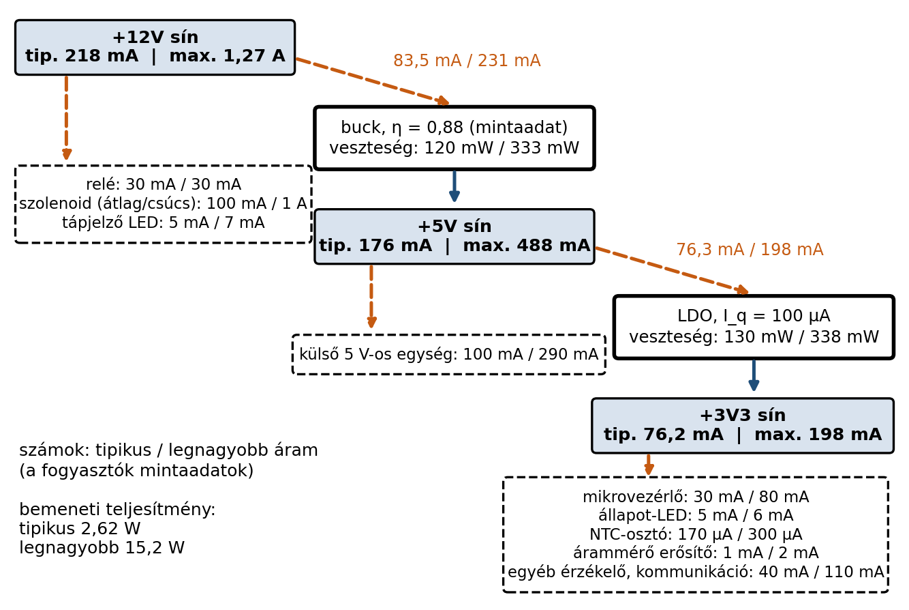
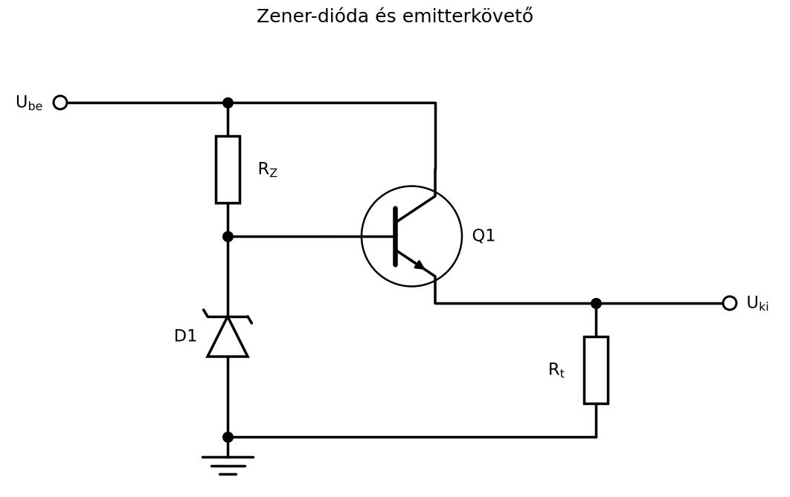
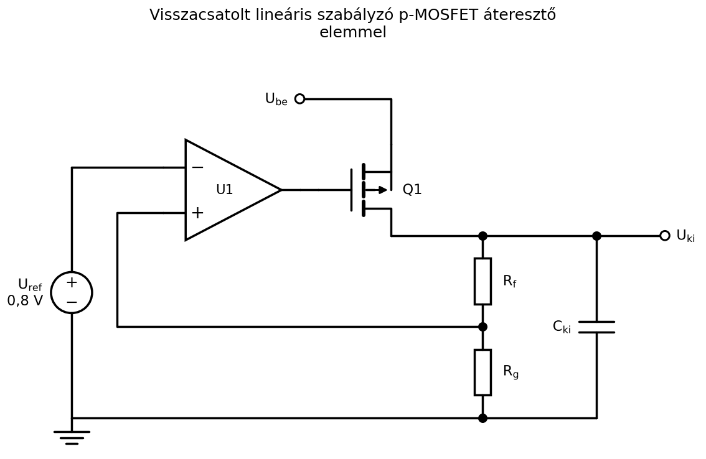
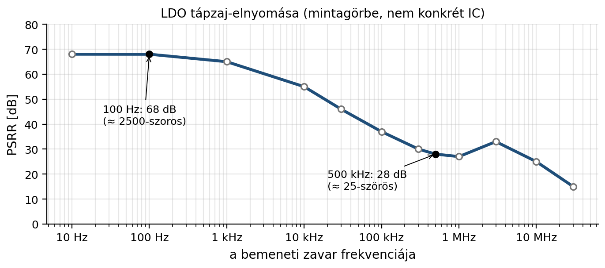
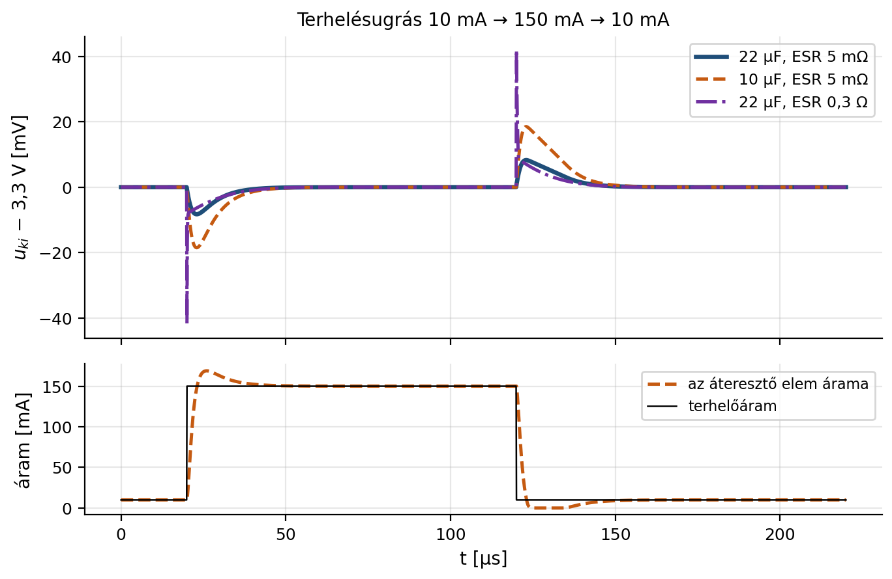
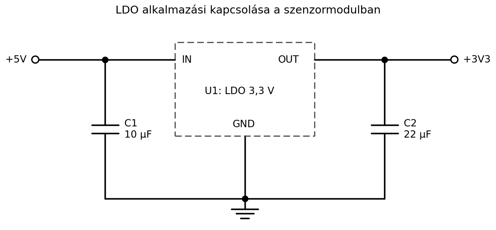

A szenzormodul 12 V-ot kap, de a mikrovezérlő 3,3 V-ot kér. Ebben az alfejezetben összeírod, mi mennyit fogyaszt, és megtervezed az utolsó fokozatot, a lineáris szabályzót. A végére:
Szükséged lesz a összefüggésre és a hatásfokra (Teljesítmény, energia, hatásfok és mértékegységek), a valós kondenzátor modelljére (A valós kondenzátor: ESR, ESL, önrezonancia, élettartam) és a műveleti erősítő negatív visszacsatolására (Alapkapcsolások: invertáló, neminvertáló, összegző, különbség- és műszererősítő).
A kapcsolási rajz első változatában valaki ezt írta: „A 3,3 V-os sín csak 200 mA, egy kis háromlábú szabályzó a 12 V-ról megoldja.” Az áramkör az asztalon működik, a nyári próbán viszont a szabályzó melegedni kezd, majd időnként lekapcsol, és a mikrovezérlő újraindul. Egy másik változatban a szabályzó hűvös marad, de a kimenetén száz kilohertz körüli rezgés látszik, pedig „csak” a kondenzátort cserélték korszerű kerámiára.
Mindkét hiba előre kiszámolható: tudni kell a sínek áramát, a szabályzó hőtermelését és a kimeneti kondenzátorra vonatkozó feltételt.
A modul tápellátása fa alakú: a 12 V-os bemenet táplálja a terheléseket és egy kapcsolóüzemű buck konvertert (a működését A buck konverter alfejezet tanítja, itt elég annyi, hogy 12 V-ból 5 V-ot állít elő kis veszteséggel), a buck 5 V-os sínje pedig egy lineáris szabályzót, amely a 3,3 V-os sínt adja.

A mérleget alulról fölfelé számoljuk: előbb a legtávolabbi sín fogyasztóit adjuk össze, ebből kijön, mennyit vesz fel a szabályzó a szülősínről, és azt hozzáadjuk a szülősín saját fogyasztóihoz.
A lineáris szabályzó (linear regulator) a bemenet és a kimenet közé tett, folyamatosan állított „ellenállás”: ha a kimenet esne, nyit rajta, ha emelkedne, szűkíti. Analógia: nyomás- csökkentő szelep a vízvezetéken. A korlátja is ugyanaz: csak csökkenteni tud, és csak a kimenet felé enged áramot. Ha valami a kimenetet fölfelé tolja, a szabályzó nem tudja „elszívni” az áramot.
A legegyszerűbb változat a Zener-dióda, LED és fotodióda Zener-stabilizátora egy emitterkövetővel megerősítve: a Zener adja a feszültséget, a tranzisztor az áramot.

A gyengéje, hogy senki nem nézi a kimenetet: és a Zener-feszültség változik a terheléssel és a hőmérséklettel. A mai szabályzók ezért visszacsatoltak: egy hibaerősítő (error amplifier, műveleti erősítő) összehasonlítja a kimenet leosztott részét egy belső referenciával, és ennek alapján vezérli az áteresztő elemet (pass element).

Gondolkodj előre: ha a terhelés hirtelen több áramot kér, a kimenet egy pillanatra leesik. Merre mozdul a hibaerősítő kimenete, és ettől több vagy kevesebb áramot enged-e át Q1? (A bemenet feszültsége csökken, így az erősítő kimenete is csökken; a p-MOSFET gate-je a source-hoz képest negatívabb lesz, tehát jobban kinyit.)
Definíció. A teljesítménymérleg (power budget) a tápsínenként összeírt fogyasztók táblázata: mindegyiknél a tipikus (átlagos üzemi) és a legnagyobb (csúcs-) áram, valamint a szabályzók vesztesége. Az üzemmód (operating mode: alvás, mérés, adás stb.) megmondja, mely fogyasztók vannak bekapcsolva egyszerre.
Egy sín kimeneti árama a rákötött fogyasztók és a róla táplált szabályzók bemeneti áramának összege. A szabályzó bemeneti árama a típustól függ:
Itt a nyugalmi áram (quiescent current), amelyet a szabályzó a saját működéséhez vesz fel, a buck hatásfoka. Szavakkal: a lineáris szabályzó az áramot továbbadja, a kapcsolóüzemű a teljesítményt (a veszteség erejéig). Ebből következik, hogy a buck bemeneti árama nő, ha a bemeneti feszültség csökken: a biztosítékot és a vezetéket nem csak a névleges 12 V-on kell ellenőrizni.
Definíció. A tartalék (margin) , ahol a szabályzó (vagy vezeték, biztosíték) megengedett árama.
Az egyidejű csúcsok összeadása óvatos becslés; ha két fogyasztó biztosan nem működik együtt, ezt a követelménylistában rögzíteni kell. A mérleg a projekt végéig frissül (Követelményektől a blokkdiagramig).
Továbbvitt eredmény. A teljesítménymérleg (alulról fölfelé, tipikus és legnagyobb árammal, a szabályzók veszteségével és tartalékkal) a tápfa; ezt használja A buck konverter, a Követelményektől a blokkdiagramig és az 1. záróprojekt: védett tápegység 12 V-ról 5 V-ra és 3,3 V-ra.
A visszacsatolt szabályzó lényegében neminvertáló erősítő (Alapkapcsolások: invertáló, neminvertáló, összegző, különbség- és műszererősítő), amelynek bemenete az referencia, a kimenete pedig egy teljesítményfokozaton keresztül hajtja a terhelést. Az aranyszabály () szerint az osztó kimenete , ezért
Szavakkal: a kimenetet az ellenállásarány és a referencia adja, a bemenet és a terhelés (ideálisan) nem. A fix kimenetű típusoknál az osztó az IC belsejében van.
Az energia nem tűnik el: ami a bemeneten bejön, és a terhelésre nem jut ki, az hő lesz.
Mértékegység: . Szavakkal: a lineáris szabályzó hatásfoka legfeljebb a két feszültség aránya, semmilyen jobb alkatrész nem segít rajta.
A tok hőmérséklete a Hőtervezés és vezetőmelegedés egyszerű modelljével becsülhető:
ahol a félvezető záróréteg-hőmérséklete (junction temperature), a környezeté, pedig a záróréteg és a környezet közötti hőellenállás (K/W): ennyi kelvint melegszik wattonként. A szenzormodul LDO-ját a Az adatlap olvasása kitalált „XL3300” típusával vesszük fel; ennek mintaadata WSON-6 tokban (alul hőleadó felülettel) 65 K/W, a kis SOT-23-5 tokban 180 K/W. Az érték erősen függ a NYÁK rézfelületétől, ezért az adatlapi szám csak a mérési elrendezésre érvényes.
Kis áramnál a nyugalmi áram uralkodik. Ha a modul alvó üzemben a 3,3 V-os sínen csak 20 µA-t fogyaszt (saját példaadat), az µA-es LDO 5 V-ról µW-ot vesz fel, a hatásfoka %. Elemes eszközben ezért az az egyik első adatlapsor, amit megnézel.
Definíció. A dropout-feszültség (dropout voltage) a legkisebb bemenet–kimenet különbség, amellyel a szabályzó még tartja a kimenetet. Alatta a kimenet a bemenettel együtt esik. A feltétel a legrosszabb esetre:
a bemenet völgyértéke a tűréssel, a hullámossággal és a terhelésugrás miatti beeséssel együtt. Egyenirányított táp pufferkondenzátoránál a völgy a csúcsérték mínusz (Egyenirányítás, védő- és fogókapcsolások, Schottky-dióda).
| áteresztő elem | dropout (nagyságrend, adatlapfüggő) | jellemző |
|---|---|---|
| NPN emitterkövető | 1,5–2,5 V | „klasszikus” háromlábú szabályzók |
| PNP | 0,2–0,6 V | a bázisáram a földbe folyik, terheléskor nagy |
| p-MOSFET | jellegű, tized volt | kis , mai LDO-k |
Definíció. Az LDO (low-dropout regulator) kis dropout-feszültségű lineáris szabályzó, jellemzően PNP vagy p-MOSFET áteresztő elemmel. A dropout az árammal nő, és melegen nagyobb; a könyv mintamodellje .
Az ábrán a hatásfok pont a dropout-határon a legnagyobb, de ott már nincs tartalék. Dropoutban a szabályzó „teljesen nyitva” van: nem szabályoz, és a bemeneti zavar is átjut rajta.
Definíció. A tápzaj-elnyomás (power supply rejection ratio, PSRR) azt mutatja, mennyivel kisebb a kimeneten egy bemeneti zavar: dB-ben. 20 dB tízszeres, 40 dB százszoros csökkentés (Decibel, átviteli függvény és Bode-diagram).
A PSRR frekvenciafüggő. Kis frekvencián nagy, mert a visszacsatolás gyorsan követi a zavart; ahogy a hurokerősítés a frekvenciával fogy (Valós paraméterek: offset, zaj, sávszélesség, slew rate, stabilitás), a PSRR is romlik; nagyon nagy frekvencián főleg a kimeneti kondenzátor és a parazita kapacitások döntenek.

A buck kimenetének 5,9 mV csúcstól csúcsig mért hullámossága (A valós kondenzátor: ESR, ESL, önrezonancia, élettartam) 28 dB-lel osztva mV (az alapharmonikusra vett közelítés). A kapcsolás éles élein keletkező tíz-száz megahertzes tüskéket viszont az LDO alig fogja meg: arra ferrit és kondenzátor kell (Valós induktivitás és ferritgyöngy).
A kimeneti zaj (output noise) a szabályzó saját zaja, az adatlap egy frekvenciasávra adja meg effektív értékben. Egy 30 µV-os mintaérték a 12 bites, 3,3 V-os ADC egy lépése ( µV) mellett nem számít; érzékeny analóg fokozatnál már igen.
Továbbvitt eredmény. A PSRR a frekvenciával romlik, a kapcsolási frekvencián nagyságrendekkel kisebb lehet, mint egyenáramon; a kimeneti kondenzátor a nagyfrekvenciás viselkedést és a terhelésugrást is meghatározza. Ezt használja a Hatásfok, veszteségek, alkatrészválasztás és kapcsolóüzemű zaj, a DAC, PWM, feszültségreferenciák és ratiometrikus mérés és a Tápintegritás és hidegítés.
Ha a terhelőáram hirtelen -vel nő, a szabályzókörnek idő kell a reakcióhoz. Addig a hiányzó áramot a kimeneti kondenzátor adja. Ha a hurok sávszélessége (az a frekvencia, ahol a hurokerősítés 1-re csökken), a reakcióidő nagyságrendje , és
Nagyságrendi becslés; mértékegység: . A 10 mA → 150 mA ugrásra 22 µF-dal és kHz-cel mV adódik, a modell 8,3 mV-ot ad.

Figyeld meg az alsó panelt: a terhelés lekapcsolásakor az áteresztő elem árama nulláig esik, de negatív nem lehet. A fölösleges töltést csak a maradék terhelés vezeti el.
A visszacsatolt szabályzó csak akkor „javít”, ha a javítás időben érkezik. Ha a hurokban sok a késés, a javítás túl későn jön, túllő, és a rendszer rezegni kezd – mint a zuhanyzó, ahol a meleg víz késve érkezik, és hol forrázol, hol fagyoskodsz. A késéseket a belső áramkör és maga a kimeneti kondenzátor okozza (a terheléssel együtt aluláteresztő szűrő).
Definíció. A fázistartalék (phase margin) megmutatja, mennyire van a hurok a rezgéstől: mínusz a hurok fáziskésése azon a frekvencián, ahol a hurokerősítés 1. Nulla vagy negatív érték: tartós rezgés; körülbelül 45° fölött jól csillapított válasz (hüvelykujjszabály).
A kondenzátor soros ellenállása () a frekvencia fölött „ellenállásossá” teszi a kondenzátort, és ezzel visszavesz a késésből. 10 µF-nál 0,3 Ω mellett kHz. Ezért:
Az ábra modellje szemléltető: a számok nem egy IC-é, az elv igen. A valós tervben az adatlap stabilitási feltétele dönt. Ellenőrzési sorrend:
A Tápintegritás és hidegítés a +3V3 sínre egy 100 µF-os polimer, egy 1 µF-os és négy 100 nF-os kondenzátorból álló készletet méretez a fogyasztó áramugrásaihoz. Ezt a készletet a választott LDO adatlapjának C- és ESR-tartományával össze kell vetni: a Az adatlap olvasása kitalált „XL3300” LDO-ja például 1–47 µF tényleges kimeneti kapacitást és legfeljebb 0,3 Ω ESR-t enged (mintaadat), a mintegy 100 µF-os készlet tehát a felső határon kívül esik. Ilyenkor más szabályzó, kisebb bulk (és újraszámolt impedancia) vagy a gyártó írásos megerősítése kell; a Tervezési átvizsgálás és átadás a NYÁK-tervezésnek a 33 µF-os polimert választja.

| Szempont | Lineáris (LDO) | Buck |
|---|---|---|
| Veszteség | – nagy különbségnél sok | kicsi, jó hatásfok |
| Zaj | kicsi, a bemeneti zavart szűri | kapcsolási zaj, szűrni kell |
| Alkatrész | két kondenzátor | tekercs, kondenzátorok, gondos elrendezés |
| Mikor | kis , zajérzékeny sín | nagy különbség vagy nagy áram |
A bevált minta a kettő sorba kötése: a buck végzi a nagy feszültségcsökkentést, az LDO pedig csak a maradék 1–2 V-ot veszi el, és közben simít.
Továbbvitt eredmény. , , , és a dropout-feltétel a legrosszabb -re; ezt használja a Hőtervezés és vezetőmelegedés és az 1. záróprojekt: védett tápegység 12 V-ról 5 V-ra és 3,3 V-ra.
1. Mérleg (legnagyobb értékek). A 3,3 V-os sín fogyasztói: mikrovezérlő 80 mA, állapot-LED 6 mA, NTC-osztó 0,3 mA, árammérő erősítő 2 mA, egyéb 110 mA – összesen 198,3 mA. Az LDO bemenete mA. Az 5 V-os sín: mA; az 500 mA-es sínkövetelményhez képest alig 2 % a tartalék, a buck 1 A-es tervezési áramához képest 51 %. A buck bemenete W, azaz 12 V-on 231 mA. A 12 V-os ágban a relé 30 mA-e, a szolenoid 1 A-es csúcsa, a tápjelző LED 7 mA-e és a buck árama: 1,27 A. Józanész-ellenőrzés: W, ennek nagy része a szolenoidé (12 W).
2. Veszteség az LDO-n. W; %. WSON-6 tokkal ( °C, K/W, mintaadat): °C, elfogadható. SOT-23-5-tel °C volna: névleges adatokkal még éppen a 125 °C-os határ alatt. A legrosszabb esetben (5,15 V-os bemenet, 3,234 V-os kimenet, Az adatlap olvasása) a veszteség 0,38 W, és a SOT-23-5 már 128 °C-ot ad, a WSON-6 pedig 85 °C-ot. A választás ezért a WSON-6.
3. Ha 12 V-ról menne. W; °C még a WSON-6 tokkal is – messze a 125 °C-os üzemi határ fölött. A kezdeti terv ezért fut hővédelembe nyáron. (A 12 V-os bemenethez ráadásul olyan típus kellene, amely ezt a feszültséget elviseli.)
4. Dropout. Az 5 V-os sín völgyértéke 4,85 V (−3 %, ugyanaz a feltevés, mint az adatlapos példában). A könyv mintamodellje szerint az LDO V-ot kér (az XL3300 garantált 180 mV-jánál óvatosabb érték), a szükséges minimum 3,55 V: 1,3 V tartalék. Egy 1,7 V-os dropoutú NPN-es szabályzó ( V) 5,0 V-ot kérne, és 4,85 V-nál már nem szabályozna.
5. Kimeneti kondenzátor. Két feltétel van. A stabilitás (XL3300, mintaadat): tényleges 1–47 µF, ESR legfeljebb 0,3 Ω. A terhelésugrás (saját követelmény): egy 140 mA-es ugrás legfeljebb 25 mV beesést okozzon, 100 kHz-es sávszélességgel (mintaadat):
A 10 µF-os 0603 X5R 10 V 3,3 V-on 6,8 µF, 85 °C-on a −10 %-os tűréssel 5,5 µF: stabil volna, de a beesés mV, nem felel meg. A 22 µF-os 0805 X5R 10 V legrosszabb esetben 12,7 µF: mV, és a mellé kerülő néhány mikrofaraddal is messze a 47 µF alatt marad. Ez lesz C2.
6. Állítható változat. V, kΩ: kΩ, E96-ból 31,6 kΩ, ezzel V (+0,85 %). Az osztó árama µA, összemérhető az -val; alvó üzemben tízszeres ellenállásokkal spórolhatsz, ha az adatlap a nagyobb osztót megengedi.
A tápfa és a szabályzóválasztás az elkit.power
modullal:
from elkit import power
tree = power.szenzormodul_tree()
print(tree.table("max"))
for u_be in (5.0, 12.0): # r_thja = 65 K/W: WSON-6, mintaadat
c = power.choose_regulator(u_be, 3.3, tree.solve("max")["+3V3"].i_out, r_thja=65)
print(f"{u_be:4.1f} V → 3,3 V: P = {c.p_ldo:.2f} W, T_J = {c.t_j_ldo:.0f} °C")
print(" ", c.advice)sín fajta I_ki P_ki I_be veszteség tartalék
+12V forrás 1.27 A 15.2 W 1.27 A 0 W 49 %
+5V buck 488 mA 2.44 W 231 mA 333 mW 51 %
+3V3 ldo 198 mA 654 mW 198 mA 338 mW 60 %
5.0 V → 3,3 V: P = 0.34 W, T_J = 82 °C
lineáris szabályzó megfelelhet (dropoutot, zajt ellenőrizd)
12.0 V → 3,3 V: P = 1.73 W, T_J = 172 °C
a lineáris szabályzó túlmelegszik: buck vagy nagyobb hűtés kellA dropout és a kondenzátor ellenőrzése legrosszabb esetre:
from elkit import parts, units
for u_be in (4.85, 3.5):
op = power.ldo_operating_point(u_be, 3.3, 0.1983)
print(f"U_be = {u_be} V: U_ki = {op.u_out:.3f} V, szabályoz: {op.in_regulation}")
for name in ("10u_0603_X5R_10V", "22u_0805_X5R_10V"):
c = parts.mlcc(name).capacitance(3.3, t=85, tolerance=-0.10) # mintaadat
du = 0.14 / (2 * 3.14159 * 100e3 * c) # f_c = 100 kHz
print(f"{name}: legrosszabb {units.fmt(c, 'F')}, beesés {du * 1e3:.0f} mV")U_be = 4.85 V: U_ki = 3.300 V, szabályoz: True
U_be = 3.5 V: U_ki = 3.252 V, szabályoz: False
10u_0603_X5R_10V: legrosszabb 5.51 µF, beesés 40 mV
22u_0805_X5R_10V: legrosszabb 12.7 µF, beesés 18 mVVégül a stabilitás a fejezet szemléltető modelljével
(elkit.extra_elch17):
from elkit import extra_elch17 as x
for model, c, esr in ((x.LDO_ESR_ABLAKOS, 10e-6, 5e-3), (x.LDO_ESR_ABLAKOS, 10e-6, 0.3),
(x.LDO_KERAMIASTABIL, 5.5e-6, 5e-3), (x.LDO_KERAMIASTABIL, 1e-6, 5e-3)):
s = x.ldo_stability(model, c, esr)
print(f"{model.name:14s} {c * 1e6:4.1f} µF, ESR {esr * 1e3:5.0f} mΩ: "
f"PM = {s.phase_margin:4.0f}°, stabil: {s.stable}")ESR-ablakos 10.0 µF, ESR 5 mΩ: PM = -8°, stabil: False
ESR-ablakos 10.0 µF, ESR 300 mΩ: PM = 40°, stabil: True
kerámiastabil 5.5 µF, ESR 5 mΩ: PM = 70°, stabil: True
kerámiastabil 1.0 µF, ESR 5 mΩ: PM = 23°, stabil: TrueAz utolsó sor a csapda: a modell „stabil”, de 23° tartalékkal erősen leng, és a hőmérséklet vagy a tűrés könnyen átviheti a rezgésbe. A modell nem egy konkrét IC (nem az XL3300): a legkisebb kapacitást mindig a saját alkatrész adatlapja adja meg.
elkit-tel határozd
meg: (a) 5 V-ról, 198,3 mA-nél,
°C-on legfeljebb mekkora
engedhető meg 100 °C-os tervezési korláttal; (b) 12 V-ról,
K/W-tal legfeljebb mekkora áram vehető ki ugyanezzel a korláttal.A teljesítménymérleg sínenként, alulról fölfelé összeadja a tipikus és a legnagyobb áramot, a szabályzók veszteségét és a tartalékot; a lineáris szabályzó az áramot, a buck a teljesítményt adja tovább a szülősínre. A visszacsatolt lineáris szabályzó kimenete , vesztesége , hatásfoka közelítően , záróréteg-hőmérséklete , ahol a hőellenállás a toktól és a NYÁK-tól függ. Csak akkor szabályoz, ha a legkisebb bemeneten is . A tápzaj-elnyomás (PSRR) a frekvenciával romlik. A kimeneti kondenzátorok a stabilitás részei: a sín teljes készletének tényleges kapacitása (egyenfeszültség, hőmérséklet, tűrés) és ESR-je az adatlap tartományában legyen. Terhelésugrásnál a beesés nagyságrendje . Nagy feszültségkülönbség vagy nagy áram esetén a buck konverter a jobb választás, utána egy LDO simíthat.
1. W; W, W, % (az ideális 56 % alatt a nyugalmi áram miatt).
2. V, V. 3,6 V-nál a kimenet V: dropoutban van.
3. 3,3 V: mA. W, °C (WSON-6), még elfogadható. Az 5 V-os sín viszont mA: átlépi az 500 mA-es követelményt. A buck (1 A) elbírná, de a követelményt módosítani vagy a csúcsok egyidejűségét kizárni (és ezt dokumentálni) kell.
4. Az ugrásra µF. A 10u_0805_X7R_16V legrosszabb esetben 7,3 µF – a stabilitási feltételt teljesíti, a beesést nem (kb. 22 mV). A 22u_0805_X5R_10V 12,7 µF: mindkettőt teljesíti ( mV).
5. 100 kHz-en 37 dB, azaz -szeres csökkentés: mV, az ADC 0,81 mV-os lépésének harmada.
6.
i_max = 0.1983
p5 = power.ldo_operating_point(5.0, 3.3, i_max).p_loss
print(f"R_th,max = {(100 - 60) / p5:.0f} K/W")
p_max = (100 - 60) / 65
i12 = (p_max - 12.0 * 100e-6) / (12.0 - 3.3)
print(f"12 V-ról legfeljebb {i12 * 1e3:.1f} mA")R_th,max = 118 K/W
12 V-ról legfeljebb 70.6 mAAz (a) eredmény a WSON-6 tokot (65 K/W) engedi, a SOT-23-5-öt (180 K/W) nem. 12 V-ról a 3,3 V-os sín legnagyobb áramának alig több mint harmada vehető ki.
7.
import numpy as np
esr = np.logspace(np.log10(0.002), 1, 200)
ok = [r for r in esr if x.ldo_stability(x.LDO_ESR_ABLAKOS, 22e-6, r).phase_margin >= 30]
print(f"ESR: {min(ok) * 1e3:.0f} mΩ … {max(ok) * 1e3:.0f} mΩ")ESR: 47 mΩ … 619 mΩIde tipikusan a tantál és egyes alumínium (polimer vagy hagyományos) elektrolitok esnek (a mintamodellben a tantál 0,25 Ω); a néhány mΩ-os kerámia nem. A hidegben megnövő ESR-t is ellenőrizni kell.